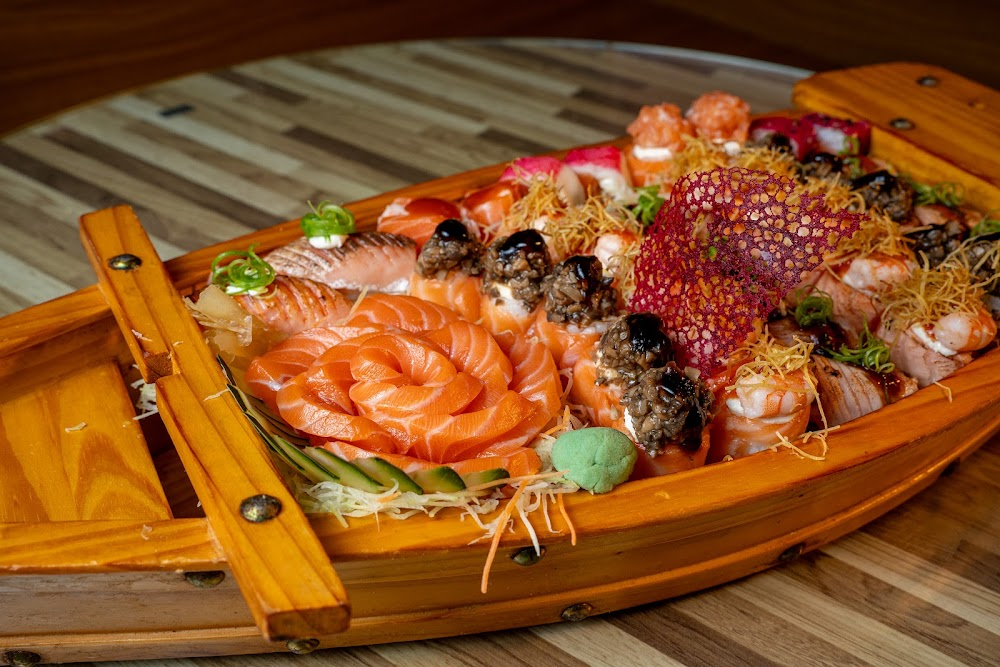
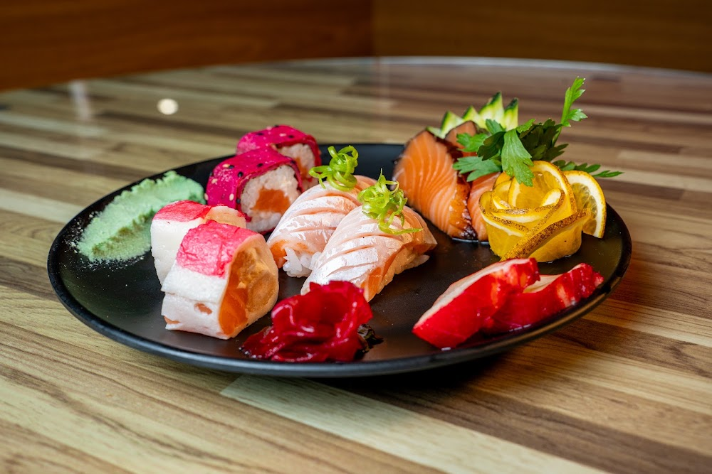
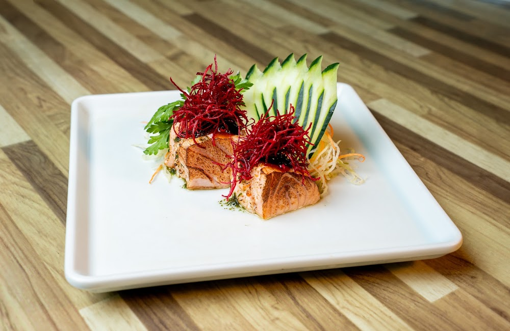

PARA COMPARTILHAR



JOY SUSHI BAR · ALPHAVILLE
VOCÊ MERECE
JOY!
Restaurante japonês em Alphaville, Salvador.
No Alpha Mall ou no conforto da sua casa.
01 / A EXPERIÊNCIA JOY
Conheça o Joy.
A boa gastronomia faz de um dia qualquer
uma ocasião para lembrar.
O Joy Sushi Bar é um restaurante japonês no Shopping Alpha Mall, em Alphaville, Salvador. Sushis, sashimis, temakis e combinados fazem parte do cardápio para um jantar a dois ou uma mesa com amigos.
Escolha seus favoritos para saborear no salão ou peça pelo delivery. Da primeira entrada às peças para compartilhar, encontre o seu jeito de viver o Joy.
02 / À PRIMEIRA VISTA
Sushis, barcas, temakis
e muito Joy.
Encontre seu próximo favorito.
Sushis, temakis e combinados para compartilhar.
JOY NA SUA CASA
O seu próximo jantar.
Do seu jeito.
Delivery de comida japonesa em Alphaville, Salvador. Peça direto ao Joy pelo WhatsApp ou escolha a nossa loja no iFood e no 99Food.
Consulte a disponibilidade de entrega para o seu endereço.
05 / NOSSO ENDEREÇO
Alphaville.
Seu próximo encontro.
Encontre o Joy Sushi Bar no Shopping Alpha Mall, em Alphaville, Salvador.
 ALPHAVILLE · SALVADORAlpha MallComo chegar
ALPHAVILLE · SALVADORAlpha MallComo chegar ENCONTRE O JOY
QUANDO VIR
Segunda a sábado 11h às 23h
Domingo 15h às 23h
FALE COM A GENTE
ANTES DO SEU PRÓXIMO JOY
Para chegar.
Para escolher.
Do frescor dos ingredientes ao seu próximo pedido, conheça o cuidado que faz parte da experiência Joy.
Onde fica o Joy Sushi Bar em Salvador?
O Joy fica no Shopping Alpha Mall, na Av. Alphaville, nº 151, loja 11, em Alphaville, Salvador, Bahia. Veja a localização e como chegar.
Como pedir delivery do Joy?
Você pode pedir pelo WhatsApp (71) 98189-0965, pelo iFood ou pelo 99Food. Escolha o seu canal de delivery. Consulte a disponibilidade, a taxa e o prazo de entrega para o seu endereço no momento do pedido.
O que tem no cardápio do Joy?
O cardápio reúne sushis, sashimis, temakis, barcas e combinados, além de entradas, pratos quentes, doces e bebidas. Veja o cardápio com descrições e valores. A disponibilidade e os preços devem ser consultados no momento do pedido.
O Joy atende no salão?
Sim. Você pode saborear a cozinha japonesa do Joy no salão, no Alpha Mall. Para combinar sua visita ou tirar dúvidas, fale com a equipe pelo WhatsApp.
POR DENTRO DO JOY
Um convite para entrar.
Conheça o espaço do seu próximo encontro.
TOUR VIRTUAL
Em breve, um novo olhar.
Um passeio pelo Joy, de onde você estiver.
Em breve